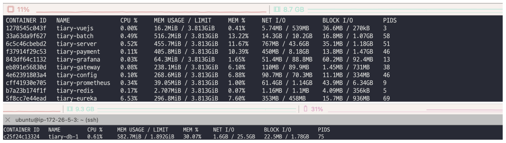
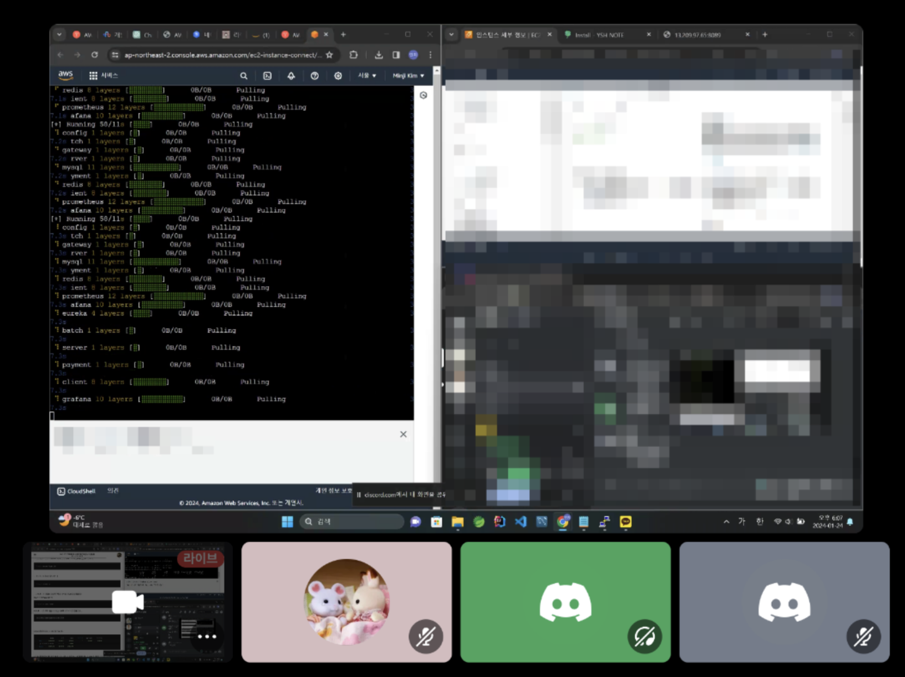

TIL (24.01.24) Tiary 서버 이사하는 날
내 Free tier는 진즉 끝나버려서 내가 배포한 Tiary 서버는 돈이 나간다.. 💸
그래서 Free tier가 남아 있는 민지 언니의 EC2 서버로 이사하게 되었다
이삿짐 싸기¶
일단 Tiary는 라이트세일 서버에 DB, EC2 서버에 다른 모든 서비스가 배포 되어 있는 상태라
DB+서비스로 합쳐서 새로운 서버에 배포해야했다
서비스 내리기 전에 컨테이너별 사용량 확인해봤는데, Free-tier 서버가 워낙 작다보니 이게 잘 돌아갈 수 있을까 싶었다..
DB Volume¶
Tiary DB는 저번 노노그래머스 DB와 달리 바인드 마운트가 아닌 볼륨을 사용한다
그래서 볼륨을 옮겨야 했다
volume 백업
# tiary_tiary-data 볼륨의 내용을 backup.tar로 압축하여 현재 호스트의 작업 디렉토리에 생성
docker run --rm -v tiary_tiary-data: /data -v $(pwd):/backup ubuntu tar cvf /backup/backup.tar /data
- 백업 대상 volume을 사용하는 컨테이너 중지
- 백업 실행용 임시 컨테이너를 생성하여 백업파일(tar)을 생성한 후 해당 컨테이너 삭제
docker run --rm: 도커 컨테이너를 시작 후 컨테이너가 종료되면 컨테이너 자동 삭제-v tiary_tiary-data: /data:tiary_tiary-data볼륨을 컨테이너의/data디렉토리에 마운트 (해당 컨테이너에서 볼륨 데이터에 접근)-v $(pwd):/backup: 현재 작업 디렉토리를 컨테이너의/backup디렉토리에 마운트 (= 백업 파일을 호스트 시스템의 현재 작업 디렉토리에 저장하기 위함)ubuntu: ubuntu 이미지를 기반으로 새 컨테이너 생성tar cvf /backup/backup.tar /data: tar 명령을 사용하여/data디렉토리의 내용을/backup/backup.tar파일로 압축c: 새로운 아카이브 생성v: 처리되는 파일 표시 (상세 모드)f: 아카이브 파일명 지정
이후 scp를 이용해 로컬로 파일을 전송받았다
prometheus.yml¶
global:
scrape_interval: 5s
scrape_configs:
- job_name: "multiple_services"
metrics_path: "/actuator/prometheus"
static_configs:
- targets: [ "tiary-server:8088", "tiary-batch:8089", "tiary-payment:8889" ]
이삿날¶
AWS 계정주 민지 언니 + 나 + 다른 언니들까지 해서 디스코드 화상 회의로 진행했다
잠깐 라이브 해봤는데 약간 스트리머 된 것 같고 신기함..
민지 언니가 라이브를 키고, 다른 사람들이 보면서 채팅으로 방향 잡아주는 느낌으로 진행했다

-
AWS EC2 접속
-
Create DB volume
## tiary_20240124.tar : volume을 압축한 파일 ## mkdir db_backup ## cd db_backup # 해당 디렉터리 안에 tiary_20240124.tar 파일 넣어두기 docker volume create tiary-db-volume # 볼륨 생성 docker run --rm -v tiary-db-volume:/var/lib/mysql -v $(pwd):/backup ubuntu sh -c "cd /var/lib/mysql && tar xvf /backup/tiary_20240124.tar --strip 1" docker volume ls-v tiary-db-volume:/var/lib/mysql: tiary-db-volume이라는 도커 볼륨을 컨테이너의 /var/lib/mysql 디렉터리에 마운트합니다. MySQL이 이 경로를 데이터 저장소로 사용하게 되면서 컨테이너 내의 MySQL 데이터를 볼륨에 영구적으로 저장할 수 있습니다.-v $(pwd):/backup: 현재 작업 디렉터리를 컨테이너의 /backup 디렉터리에 마운트합니다. (로컬 시스템에서 백업 파일을 컨테이너로 전송)ubuntu: ubuntu 이미지를 기반으로 컨테이너 생성sh -c "cd /var/lib/mysql && tar xvf /backup/tiary_20240124.tar --strip 1: 컨테이너 내에서 실행될 명령어
(var/lib/mysql디렉터리로 이동한 후,/backup디렉터리에 있는 tiary_20240124.tar 파일을 현재 디렉터리/var/lib/mysql로 압축 해제하며--strip 1옵션으로 인해 압축 해제 과정에서 최상위 디렉터리를 제거하고 파일들을 현재 경로에 직접 추출함)
-
monitoring dir structure
-
docker-compose.yml 준비
version: '3' services: client: container_name: tiary-vuejs image: dockerhub_name/tiary:client ports: - "5173:80" restart: always mysql: container_name: tiary-mysql image: mysql:8.0 ports: - "3306:3306" restart: always volumes: - tiary-db-volume:/var/lib/mysql eureka: container_name: tiary-eureka image: dockerhub_name/tiary:eureka ports: - "8761:8761" depends_on: - mysql restart: always config: container_name: tiary-config image: dockerhub_name/tiary:config ports: - "9000:9000" depends_on: - eureka restart: unless-stopped server: container_name: tiary-server image: dockerhub_name/tiary:server environment: - TZ=Asia/Seoul ports: - "8088:8088" depends_on: - eureka - config restart: unless-stopped batch: container_name: tiary-batch image: dockerhub_name/tiary:batch environment: - TZ=Asia/Seoul ports: - "8089:8089" depends_on: - eureka - config - server restart: unless-stopped payment: container_name: tiary-payment image: dockerhub_name/tiary:payment environment: - TZ=Asia/Seoul ports: - "8889:8889" depends_on: - eureka - config restart: unless-stopped gateway: container_name: tiary-gateway image: dockerhub_name/tiary:gateway ports: - "8090:8090" depends_on: - eureka redis: container_name: tiary-redis image: redis ports: - "6379:6379" restart: unless-stopped prometheus: container_name: tiary-prometheus image: prom/prometheus ports: - "9090:9090" volumes: - ./monitoring/prometheus/prometheus.yml:/etc/prometheus/prometheus.yml grafana: container_name: tiary-grafana image: grafana/grafana ports: - "3000:3000" depends_on: - prometheus volumes: - ./monitoring/grafana/data:/var/lib/grafana volumes: tiary-db-volume: external: true -
docker compose up

다음번에는 마냥 배포하지 말고, 효율을 위해 CPU limit도 알아보고 걸어봐야지
이렇게 테스트 서버 이사하듯이 말고, 라이브 서비스 이사하는 거라 생각하면 어떻게 해야할까 
monitoring도 볼륨으로 두어야겠다